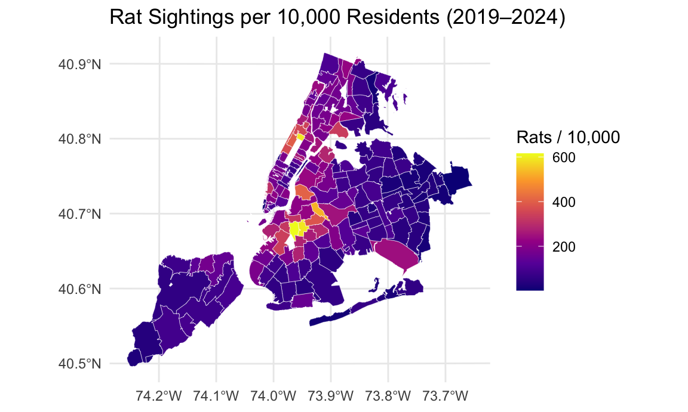
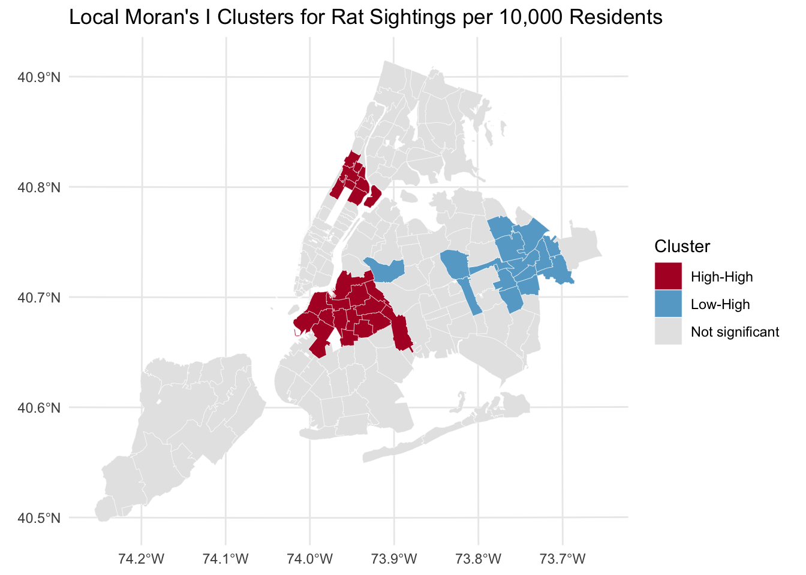

Analysis
第 2 步：读入 Data.Rmd 导出的合并数据
在 “5. 空间分析” 下面加一个 chunk，读取你在 Data.Rmd 中导出的
zip_year_month_merged.csv：
df_merged <- readr::read_csv("data/zip_year_month_merged.csv") |>
janitor::clean_names() |>
dplyr::mutate(zipcode = as.character(zipcode))
glimpse(df_merged)## Rows: 12,960
## Columns: 10
## $ zipcode <chr> "10001", "10001", "10001", "10001", "10001"…
## $ year <dbl> 2019, 2019, 2019, 2019, 2019, 2019, 2019, 2…
## $ month <dbl> 1, 2, 3, 4, 5, 6, 7, 8, 9, 10, 11, 12, 1, 2…
## $ rat_count_zip_month <dbl> 2, 2, 6, 9, 5, 2, 4, 8, 4, 5, 1, 2, 2, 2, 3…
## $ violation_count_zip_month <dbl> 0, 0, 0, 2, 5, 0, 0, 0, 0, 0, 0, 0, 0, 7, 0…
## $ inspection_count_zip_month <dbl> 0, 0, 0, 1, 1, 0, 0, 0, 0, 0, 0, 0, 0, 1, 0…
## $ total_pop <dbl> 24117, 24117, 24117, 24117, 24117, 24117, 2…
## $ poverty_rate <dbl> 0.1305832, 0.1305832, 0.1305832, 0.1305832,…
## $ population_density <dbl> 24.117, 24.117, 24.117, 24.117, 24.117, 24.…
## $ median_household_income <dbl> 92.84, 92.84, 92.84, 92.84, 92.84, 92.84, 9…zip_df <- df_merged |>
group_by(zipcode) |>
summarise(
rat_count_total = sum(rat_count_zip_month, na.rm = TRUE),
violation_total = sum(violation_count_zip_month, na.rm = TRUE),
inspection_total = sum(inspection_count_zip_month, na.rm = TRUE),
total_pop = mean(total_pop, na.rm = TRUE)
) |>
mutate(
rats_per_10000 = 10000 * rat_count_total / total_pop,
violations_per_restaurant = violation_total / inspection_total
) |>
filter(
!is.na(rats_per_10000),
!is.na(violations_per_restaurant)
)
zip_df |> head()## # A tibble: 6 × 7
## zipcode rat_count_total violation_total inspection_total total_pop
## <chr> <dbl> <dbl> <dbl> <dbl>
## 1 10001 446 4191 1297 24117
## 2 10002 964 3739 1077 74479
## 3 10003 977 4712 1422 53977
## 4 10004 57 1047 325 3335
## 5 10005 71 542 147 8701
## 6 10006 52 361 113 3092
## # ℹ 2 more variables: rats_per_10000 <dbl>, violations_per_restaurant <dbl>ny_zcta <- tigris::zctas(state = "NY", year = 2010) |>
dplyr::rename(zipcode = ZCTA5CE10) |>
dplyr::mutate(zipcode = as.character(zipcode))
ny_zip_sf <- ny_zcta |>
dplyr::left_join(zip_df, by = "zipcode") |>
dplyr::filter(!is.na(violations_per_restaurant)) |>
sf::st_transform(2263)
ny_zip_sf## Simple feature collection with 180 features and 17 fields
## Geometry type: MULTIPOLYGON
## Dimension: XY
## Bounding box: xmin: 913090.7 ymin: 120053.5 xmax: 1080968 ymax: 272752.9
## Projected CRS: NAD83 / New York Long Island (ftUS)
## First 10 features:
## STATEFP10 zipcode GEOID10 CLASSFP10 MTFCC10 FUNCSTAT10 ALAND10 AWATER10
## 1 36 10464 3610464 B5 G6350 S 9070627 236605
## 2 36 10470 3610470 B5 G6350 S 3689950 3918
## 3 36 10455 3610455 B5 G6350 S 1844518 0
## 4 36 10473 3610473 B5 G6350 S 5645604 13868
## 5 36 11234 3611234 B5 G6350 S 19547849 2143727
## 6 36 11210 3611210 B5 G6350 S 4250381 0
## 7 36 11215 3611215 B5 G6350 S 5641351 54168
## 8 36 11224 3611224 B5 G6350 S 3999168 91783
## 9 36 11239 3611239 B5 G6350 S 1477966 30120
## 10 36 10030 3610030 B5 G6350 S 722465 0
## INTPTLAT10 INTPTLON10 PARTFLG10 rat_count_total violation_total
## 1 +40.8677868 -073.7999204 N 48 216
## 2 +40.8895273 -073.8726596 N 357 300
## 3 +40.8147100 -073.9085917 N 894 926
## 4 +40.8186904 -073.8584741 N 416 200
## 5 +40.6050798 -073.9117206 N 583 1474
## 6 +40.6281475 -073.9463244 N 482 669
## 7 +40.6626879 -073.9867402 N 2372 2664
## 8 +40.5773723 -073.9887059 N 378 519
## 9 +40.6477354 -073.8794772 N 71 156
## 10 +40.8182666 -073.9428564 N 1072 224
## inspection_total total_pop rats_per_10000 violations_per_restaurant
## 1 70 4531 105.93688 3.085714
## 2 89 15716 227.15704 3.370787
## 3 261 41951 213.10577 3.547893
## 4 63 59579 69.82326 3.174603
## 5 415 93534 62.33028 3.551807
## 6 202 64665 74.53800 3.311881
## 7 834 69873 339.47304 3.194245
## 8 163 45795 82.54176 3.184049
## 9 48 12772 55.59035 3.250000
## 10 59 31060 345.13844 3.796610
## geometry
## 1 MULTIPOLYGON (((1043380 257...
## 2 MULTIPOLYGON (((1021394 267...
## 3 MULTIPOLYGON (((1007191 237...
## 4 MULTIPOLYGON (((1016265 238...
## 5 MULTIPOLYGON (((1003791 151...
## 6 MULTIPOLYGON (((1002259 169...
## 7 MULTIPOLYGON (((985223.7 18...
## 8 MULTIPOLYGON (((989083.2 15...
## 9 MULTIPOLYGON (((1019132 179...
## 10 MULTIPOLYGON (((1001262 237...ggplot(ny_zip_sf, aes(fill = rats_per_10000)) +
geom_sf(color = "white", size = 0.1) +
scale_fill_viridis_c(option = "C") +
labs(
title = "Rat Sightings per 10,000 Residents (2019–2024)",
fill = "Rats / 10,000"
) +
theme_minimal()
ggplot(ny_zip_sf, aes(fill = violations_per_restaurant)) +
geom_sf(color = "white", size = 0.1) +
scale_fill_viridis_c(option = "C") +
labs(
title = "Violations per Restaurant (2019–2024)",
fill = "Violations / Inspection"
) +
theme_minimal()
# 构建空间权重（允许存在没有邻居的 polygon）
nb <- spdep::poly2nb(ny_zip_sf)
lw <- spdep::nb2listw(nb, style = "W", zero.policy = TRUE)# 对 rats_per_10000 做 Local Moran's I
rats_lisa <- spdep::localmoran(
ny_zip_sf$rats_per_10000,
lw,
zero.policy = TRUE
)
# 转成 data.frame，方便按列名 / 位置取
rats_lisa_df <- as.data.frame(rats_lisa)
names(rats_lisa_df) # 如果好奇可以看一下列名## [1] "Ii" "E.Ii" "Var.Ii" "Z.Ii"
## [5] "Pr(z != E(Ii))"ny_zip_sf <- ny_zip_sf |>
dplyr::mutate(
rats_I = rats_lisa_df$Ii, # 第 1 列
rats_p = rats_lisa_df[[ncol(rats_lisa_df)]], # 最后一列，通常是 p-value
rats_mean = mean(rats_per_10000, na.rm = TRUE),
rats_centered = rats_per_10000 - rats_mean,
rats_lag = spdep::lag.listw(lw, rats_per_10000, zero.policy = TRUE),
rats_quad = dplyr::case_when(
rats_centered > 0 & rats_lag > 0 & rats_p <= 0.05 ~ "High-High",
rats_centered < 0 & rats_lag < 0 & rats_p <= 0.05 ~ "Low-Low",
rats_centered > 0 & rats_lag < 0 & rats_p <= 0.05 ~ "High-Low",
rats_centered < 0 & rats_lag > 0 & rats_p <= 0.05 ~ "Low-High",
TRUE ~ "Not significant"
)
)cluster_cols <- c(
"High-High" = "#b2182b",
"Low-Low" = "#2166ac",
"High-Low" = "#ef8a62",
"Low-High" = "#67a9cf",
"Not significant" = "grey90"
)
ggplot2::ggplot(ny_zip_sf, ggplot2::aes(fill = rats_quad)) +
ggplot2::geom_sf(color = "white", size = 0.1) +
ggplot2::scale_fill_manual(values = cluster_cols) +
ggplot2::labs(
title = "Local Moran's I Clusters for Rat Sightings per 10,000 Residents",
fill = "Cluster"
) +
ggplot2::theme_minimal()